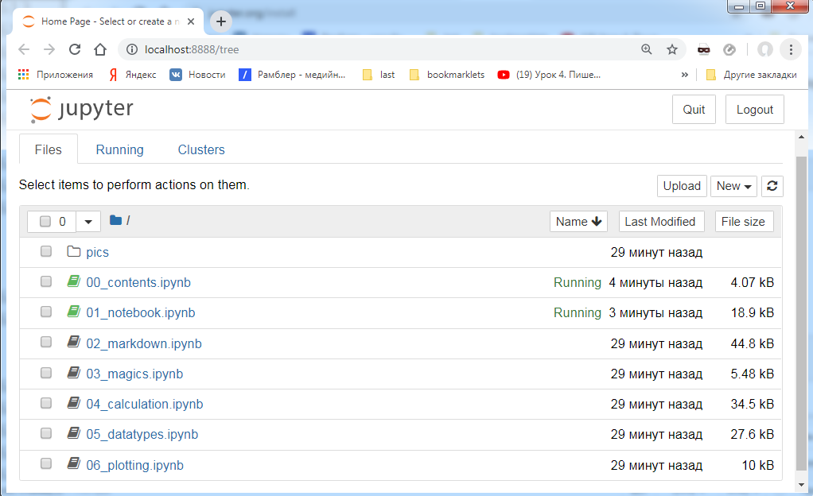

-
strqu
__
================================
================================
================================
-
-
B03toTable.py
| actions |
действия |
collapse |
свернуть |
intention |
намерение |
override |
переопределение |
| brief |
краткий |
completion |
завершение |
join |
присоединяться |
|
|
| caret |
курсор |
implement |
реализовать |
lookup |
просмотр |
|
|
B03toTable.py
_B03toTable.py_
================================
#B03toTable.py
# python in_txt out_txt sort
# строки ключ '\t' значение
# сортирует по ключу string2 = sort(string1)
# переводит в таблицу string2 = listNtab(string1, NCOLUMN)
# из NCOLUMN колонок поколоночно
#IN_TXT
# actions действия
# brief краткий
# caret курсор
# collapse свернуть
# completion завершение
# implement реализовать
# intention намерение
# join присоединяться
# lookup просмотр
# override переопределение
# OUT_TXT
# <table>
# <tr>
# <td>actions</td>
# <td>действия </td>
# <td>collapse</td>
# <td>свернуть </td>
# <td>intention</td>
# <td>намерение </td>
# <td>override</td>
# <td>переопределение </td>
# </tr>
# <tr>
# <td>brief</td>
# <td>краткий </td>
# <td>completion</td>
# <td>завершение </td>
# <td>join</td>
# <td>присоединяться </td>
# <td></td>
# <td></td>
# </tr>
# <tr>
# <td>caret</td>
# <td>курсор </td>
# <td>implement</td>
# <td>реализовать </td>
# <td>lookup</td>
# <td>просмотр </td>
# <td></td>
# <td></td>
# </tr>
# </table>
# <div style="display: none">
# actions действия
# brief краткий
# caret курсор
# collapse свернуть
# completion завершение
# implement реализовать
# intention намерение
# join присоединяться
# lookup просмотр
# override переопределение
# </div>
import codecs
NCOLUMN = 4
OUT_TXT = "B03out.txt"
IN_TXT = "B03in.txt"
string1 = ""
string2 = ""
def readFile():
string1 = ''
with codecs.open(IN_TXT, 'r', 'utf-8') as file:
string1 = file.read()
return string1
def writeFile(string1):
with codecs.open(OUT_TXT, 'w', 'utf-8') as file:
file.write(string1)
def sort(string1):
string1 = string1.lower()
list = string1.split('\r\n')
list.sort()
string2 = '\r\n'.join(list)
return string2
def to2tab(string1):
string1 = string1.strip()
list1 = string1.split('\r\n')
list2 = []
for i in list1:
# i = '<tr>' + i + '</tr>'
isplit = i.split('\t')
if len(isplit) < 2:
isplit.append('')
td1 = isplit[0]
td2 = isplit[1]
td1 = '<td>' + td1 + '</td>'
td2 = '<td>' + td2 + '</td>'
tr = '\t' + td1 + '\r\n\t' + td2
tr = '<tr>\r\n' + tr + '\r\n</tr>'
list2.append(tr)
string2 = '\r\n'.join(list2)
string2 = '<table>\r\n' + string2 + '\r\n</table>'
return string2
def from2tab(string1, strMask):
strMask1 = '<' + strMask + '>'
strMask2 = '</' + strMask + '>'
list=[]
n1 = -1
n2 = -1
while(True):
n1 = string1.find(strMask1, n1+1)
n2 = string1.find(strMask2, n2+1)
if(n1==-1 or n2==-1):
break
strFind = string1[(n1 + NCOLUMN):n2]
strFind = strFind.strip()
list.append(strFind)
return list
def listNtab(string1, nColumn):
list1 = string1.split('\r\n')
list2 = []
k = 0
#10/4 => 3
count = int(len(list1)/nColumn)
temp = 1 if len(list1)%nColumn>0 else 0
count += temp
for i in range(nColumn):
list2.append([])
for j in range(count):
if k<len(list1):
list2[i].append(list1[k])
else:
list2[i].append('')
k += 1
# print(list2)
# print(len(list2),len(list2[0]))
icount = len(list2)
jcount = len(list2[0])
stringRow = ''
string2 = ''
for j in range(jcount):
stringRow = ''
listRow = []
stringRowTr = ''
whilecount = icount*2
for i in range(icount):
if i<icount-1:
stringRow += list2[i][j] + '\t'
else:
stringRow += list2[i][j]
listRow = stringRow.split('\t')
for i in range(len(listRow),whilecount):
listRow.append('')
for i in listRow:
stringRowTr += '\t<td>' + i + '</td>\r\n'
stringRowTr = '\t' + stringRowTr.strip()
stringRowTr = '<tr>\r\n' + stringRowTr + '\r\n</tr>'
string2 += stringRowTr + '\r\n'
string2 = string2.strip()
string2 = '<table>\r\n' + string2 + '\r\n</table>'
return string2
string1 = readFile()
string2 = sort(string1)
string1 = string2
string2 = listNtab(string1, NCOLUMN)
def appDivList(string1):
string2 = "<div style=\"display: none\">\r\n" \
+ string1\
+ '\r\n</div>'
return string2
string2 += '\r\n' + appDivList(string1)
writeFile(string2)
================================
-
_B04frTab.py_
================================
# B04frTab.py
# получение списка ключ '\t' значение
# из таблицы
# tab2list
import codecs
from B03toTable import from2tab
OUT_LIST_TXT = "B04out.txt"
IN_TABLE_TXT = "B04in.txt"
def readFile():
string1 = ''
with codecs.open(IN_TABLE_TXT, 'r', 'utf-8') as file:
string1 = file.read()
return string1
def writeFile(string1):
with codecs.open(OUT_LIST_TXT, 'w', 'utf-8') as file:
file.write(string1)
def tab2list(string1):
listTr = from2tab(string1, 'tr')
listTd = []
listTrTd = []
k = 0
countTd = 0
for strListTr in listTr:
listTd = from2tab(strListTr, 'td')
if k == 0:
countTd = len(listTd)
listTrTd.append(listTd)
countTr = len(listTrTd)
list = []
strTd = ''
for i in range(int((countTd+1)/2)):
for j in range(countTr):
strTd = listTrTd[j][i*2] + '\t' + listTrTd[j][i*2+1]
list.append(strTd)
# print(list, listTrTd)
string2 = '\r\n'.join(list)
return string2
print("Welcome...", type('a'))
string1 = readFile()
string2 = tab2list(string1)
writeFile(string2)
================================
-
__
================================
D:\mailCloud\prjother\017python\utils\A02setcpy\setcpy01.py
#setcpy01.py
#если нет файла huishu01.txt, то он его создает
# netbean082.txt 04install
# netbean083.txt 04install
#из содержимого директория игнорируя
# setcpy01.py
# ignore.txt
# huishu01.txt
# из ignore.txt
# имя файла директрия и куда записать в папку
# на уровень выше
# порождает следующий logout04.txt
# freonpc ..\04install\netbean082.txt
# freonpc ..\04install\netbean083.txt
# freonpc ..\04install\netbean084.txt
# 2019-08-23 14:56:10.663600
#
# freonpc ..\04install\netbean085.txt
# 2019-08-23 15:03:21.964269
import codecs
import os
from datetime import time, datetime
import socket
import shutil
import errno
INSTALL_DIR = "04install"
LOGOUT__TXT = "logout01.txt"
HUISHU = "huishu01.txt"
string1 = ""
string2 = ""
def readFile(name):
string1 = ''
with codecs.open(name, 'r', 'utf-8') as file:
string1 = file.read()
return string1
def writeFile(name, string1):
with codecs.open(name, 'w', 'utf-8') as file:
file.write(string1)
def makeHuis():
string1 = ""
file_list1 = os.listdir()
strIgnore = readFile("ignore.txt")
listIgnore1 = strIgnore.split("\r\n")
listIgnore = []
for i in listIgnore1:
if i != "":
listIgnore.append(i)
file_list = []
for i in file_list1:
bis = False
for j in listIgnore:
if i == j:
bis = True
break
if bis == False \
and i[:3]!="log"\
and i[0]!='.':
file_list.append(i)
for i in file_list:
string1 += i + "\t" + INSTALL_DIR + "\r\n"
writeFile(HUISHU, string1)
# writeFile(HUISHU,strIgnore)
def lastLog():
string1 = ""
list = os.listdir()
list2 = []
for i in list:
if i[:3] == "log":
list2.append(i)
list2.sort()
if len(list2)<1:
return ""
else:
string1 = list2[len(list2)-1]
return string1
def nextLog():
string1 = lastLog()
if len(string1) == 0:
return "logout01.txt"
string2 = string1[6:8]
i = int(string2) + 1
string2 = "" + str(i)
if len(string2) < 2:
string2 = '0' + string2
string2 = "logout" + string2 + ".txt"
return string2
def readHuis():
string1 = readFile(HUISHU)
list1 = string1.split("\r\n")
list = []
for i in list1:
if i != "":
list.append(i)
return list
def appendLog(logName):
if lastLog() == "":
list = []
for i in copy.arrayTo:
list.append(socket.gethostname() + '\t' + i)
writeFile(logName, '\r\n'.join(list))
return
textLastLog = readFile(lastLog())
listLast1 = textLastLog.split("\r\n")
listLast = []
for i in listLast1:
if i != "":
listLast.append(i)
listAdd = []
listHost=[]
for i in copy.arrayTo:
listHost.append(socket.gethostname()+'\t'+i)
for i in listHost:
boolIs = False
for j in listLast:
if i == j:
boolIs = True
break
if boolIs == False:
listAdd.append(i)
if len(listAdd)>0:
textAdd = '\r\n'.join(listAdd)
text = textLastLog + '\r\n' + '\r\n' \
+ textAdd + '\r\n' \
+ str(datetime.now())
writeFile(logName, text)
class ClCopy:
arrayName = []
arrayPath = []
arrayTo = []
@classmethod
def setArrays(self, list):
if len(list) == 0:
return
for i in list:
lrow = i.split("\t")
while len(lrow)<2:
lrow.append("")
self.arrayName.append(lrow[0])
self.arrayPath.append(lrow[1])
k = 0
for i in self.arrayName:
self.arrayTo.append("..\\"
+ self.arrayPath[k] + "\\"
+ self.arrayName[k])
k += 1
@classmethod
def copyDirFile(cls, src, dest):
try:
shutil.copytree(src, dest)
except OSError as e:
# If the error was caused because the source wasn't a directory
if e.errno == errno.ENOTDIR:
shutil.copy(src, dest)
else:
print('Directory not copied. Error: %s' % e)
@classmethod
def copy(self):
for i in range(len(self.arrayName)):
self.copyDirFile(self.arrayName[i], self.arrayTo[i])
file_list = os.listdir()
if file_list.count(HUISHU) == 0:
makeHuis()
# print(file_list.count(HUISHU))
logName = nextLog()
list = readHuis()
copy = ClCopy
copy.setArrays(list)
copy.copy()
string1 = '\r\n'.join(copy.arrayTo)
appendLog(logName)
print(__file__)
================================
-
-
IJavascript for jupyterlab
install
.NET Framework 2.0 Software Development Kit (SDK) (x64)
1) Ставим питона и ТОЛЬКО второй версии. Третья не поддерживается.
2) Пробуем снова.
3) Если не получилось, вручную указывает путь до питона через npm config set python /path/to/python.
Для еще большей уверенности ставите node-gyp через npm -g install node-gyp и делаете node-gyp rebuild.
npm install -g ijavascript
ijsinstall
Using Jupyter Notebooks for JavaScript #1: Installation
npm install --global --production windows-build-tools
-
toStart:
D:\programs\android\course_opt\jupyter_tutorial
jupyter notebook
localhost:8888/tree
_im36jup.png_

C:\Users\argon\AppData\Local\Programs\Python\Python36\Scripts\jupyter-notebook.exe
%ls
Tab - автодополнение
!hostname
!dir
список всех команд
%lsmagic
Help - ?
%precision?
shift tab - подсказка из ``` help ```
dir() - список переменных в области видимости
pip install jupyterlab
pip install conda
conda install -c conda-forge jupyterlab
jupyter lab
JupyterLab Tutorials: Introduction,Installation & Shortcuts
jupyterlab
Python и Jupyter Notebook: курс молодого бойца
Особенности Jupyter Notebook, о которых вы (может быть) не слышали
github
pycharm/jupyter-notebook-support
Layout and Styling of Jupyter widgets
install
pip install jupyter
__
================================
================================
================================
-
base
codecs.open(filename,'r','utf-8')
| codecs.open(filename,'r','utf-8') |
открыл на чтение |
| with codecs.open(name, 'w', 'utf-8') as file:
file.write(string1) |
Открыл файл name на перезапись, записал строку string1 |
| strings = file.readlines() |
В список strings считываются строки из файла file |
| file.read() |
возвращает строку - содержимое файла |
| teList = '\r\n'.join(listFilesDirs) |
строка из листа |
| a=4>3?3:5 3 a=4<3?3:5 5 |
однострочный if в С++ |
| temp = 1 if len1%nColumn>0 else 0 |
Тернарный оператор |
| os.listdir() |
(dir&file)s list |
| __file__ |
D:/mailCloud/prjother/017python/utils/A02setcpy/setcpy01.py |
|
|
|
|
|
|
| string |
-- -- -- -- |
| string1.find("text") |
true, false |
|
|
|
|
|
|
|
|
|
|
|
|
|
|
| system |
--- --- --- |
| pip install jupyter |
|
| pip install pip==9.0.3 |
|
|
|